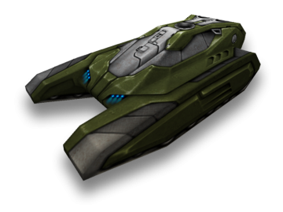
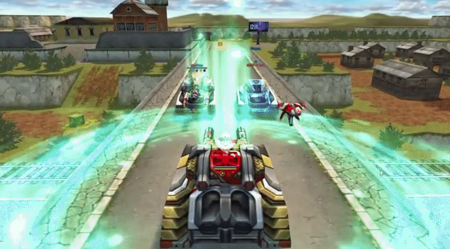
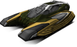

概括
作为 Tanki Online 世界的怪人，独裁者是游戏必须提供的更独特的底盘之一。
中型底盘，与重型底盘接壤，独裁者拥有高扭矩、如山般的重量和异常高大的身材。
这个制高点是使该底盘与众不同的原因，因为安装在该车体上的炮塔可以越过其他坦克认为无法克服的障碍物开火。
再加上炮塔在坦克后部的位置，隐藏位置和射击位置的许多优势变得很容易获得。
然而，除非你在乒乓球比赛中四处爬行，否则中远程武器在独裁者上的表现最好，
因为它是中型底盘中最慢的，并且加速速度相当差。
车库中的描述
中型底盘。以稳定性和大小着称。
过速装置会为自己和附近所有盟友激活所有道具的效果。
得益于改进的主动保护系统和在其结构中使用的最新复合材料，
该底盘成功地吸收了任何口径子弹的爆炸能量，同时仍保持中型底盘。
激活其过速装置将迫使坦克和附近盟友的伤害和护甲道具启动。
您将得到完全修复，获得额外保护，并获得更快的速度，此外还会掉落地雷。
预装的过速反应器不需要用户的电源即可工作。
这种底盘的拥有者可以轻松带领团队进行全面攻击，首当其冲，
这要归功于底盘的大小，使其成为敌人的完美目标。
装备改造

过速装置
道具过速

皮肤

独裁者标准

独裁者 XT